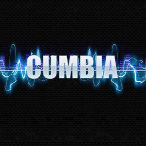

Cumbia

La cumbia es un estilo o genero de música tradicional de Colombia y Panamá, y un baile popular de distintos países latinoamericanos. La etimología del vocablo es muy controvertida, ademases unos de los festejos, sin embargo la hipótesis más generalmente aceptada sobre su origen es que el término es de origen bantú y derivada cumbia, ritmo y danza de la zona de Mbata, en Guinea Ecuatorial. La etimología del vocablo es muy controvertida, sin embargo la hipótesis mas generalmente aceptada sobre su origen es que el término es de origen bantú y deriva de cumbia, ritmo y danza de la zona de Mbata, en Guinea Ecuatorial.
Página
Portada